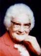

fiche familiale
*******************************************************************************
Clément Guertin
Naissance le 6 mai 1863
Père: Clément Guertin
Mère: Eulalie Richard
Mariage: 29 jul 1883 à Ste-Cécile de Masham (La Pêche)
Épouse: Angèle Martineau
Naissance le 18 jan 1867
Père: Médard Martineau
Mère: Caroline Martin
*******************************************************************************
Enfant 1 Médard Guertin
Naissance: 1 jan 1888
Mariage le 23 jun 1908 à Ste-Cécile de Masham (La Pêche)
Conjointe: Gracia Coderre
-------------------------------------------------------------------------------
Enfant 2 Georgiana Guertin
Naissance: 16 aoû 1891
Mariage le 6 août 1912 à Ste-Cécile de Masham (La Pêche)
Conjoint: Jean-Baptiste Cloutier
-------------------------------------------------------------------------------
Enfant 3 Rose-Alba Guertin
Naissance: 12 aoû 1893
Mariage le 12 oct 1914 à Ste-Cécile de Masham (La Pêche)
Conjoint: Luc Renaud
-------------------------------------------------------------------------------
Enfant 4 Josaphat Guertin
Naissance: 8 sep 1895
-------------------------------------------------------------------------------
Enfant 5 Godfroi Guertin
Naissance: 5 mai 1897
-------------------------------------------------------------------------------
Enfant 6 Éva-Emilia Guertin
Naissance: 10 mar 1901
Mariage le 8 jul 1939 à Notre-Dame-de-Grâce de Hull
Conjoint: Hector Fleury
-------------------------------------------------------------------------------
|   |
Enfant 7 Dora-Ernestine Guertin Dite "Dora". décède à l'âge de 85 ans. Naissance le 30 avril 1904 à Ste-Cécile de Masham (La Pêche) Décès le 13 déc 1989 à Hull Sépulture au cimetière de La Pêche (Masham) (ses ancêtres) Mariage le 30 avril 1924 à Sacré-Coeur de New-Liskeard, ON Conjoint: Herménégilde Beaudoin n. 23 jan 1900 d. 27 aoû 1973 (sa famille) |
Enfant 8 Léonard Guertin
Mariage le 28 oct 1939 à St-Charles de Vanier, ON
Conjointe: Rita Leduc
*******************************************************************************
| Début de la page | Page précédente | Page des ancêtres | Page d'accueil |